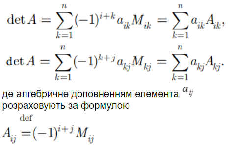

Створюємо меню для зручності. Генеруємо або створюємо самостійно квадртану матрицю. Задаємо декілька елементів нулів на головній діагоналі матриці. Визначаємо всі максимальні значення даної матриці та її індекси.
Використовуємо дані формули у визначення детермінанта.

Літературні джерела: